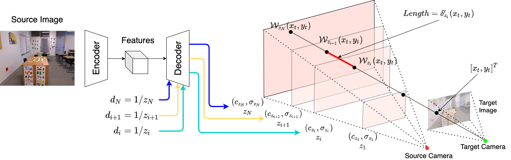

1ByteDance 2National University of Singapore
*Denotes equal contribution
We propose NeMI, an approach to perform novel view synthesis and depth estimation via dense 3D reconstruction from a single image.
NeMI unifies Neural radiance fields (NeRF) with Multiplane Images (MPI). Specifically, NeMI is a general two-dimensional and image-conditioned extension of NeRF, and a continuous depth gen-eralization of MPI.
Given a single image as input, our method predicts a 4-channel image (RGB and volume den-sity) at arbitrary depth values to jointly reconstruct the camera frustum and fill in occluded contents.
The reconstructedand inpainted frustum can then be easily rendered into any novel RGB or depth views using differentiable rendering.
Our network is an encoder-decoder architecture that takes a single image and a list of continuous depth values as inputs and outputs the reconstructed source camera frustum. NeMI reconstructs the camera frustum per plane. Our encoder is a fully convolutional network that takes a single image as input and outputs the feature maps. The depth decoder takes this feature maps and a continuous depth value as inputs, and outputs an 4-channel image of RGB values and volume density.
With the reconstructed frustum of the source camera, rendering any novel view only requires an additional homography wrapping step. Imagine a ray that starts from target camera origin and intersects the target image at any pixel coordinate. This ray intersects with the predicted planes in the source camera's frustum, the RGB and volume density is then obtained with bilinear interpolation. The noval view can then be rendered with classifical volume rendering, similar to [Mildenhall et al. 2020].
We thank Richard Tucker for helpful discussions. This website is inspired by the template of Michaël Gharbi.